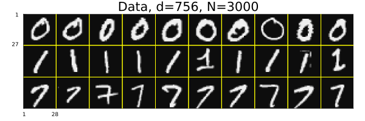
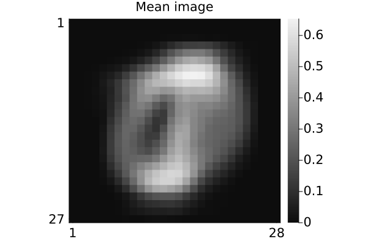
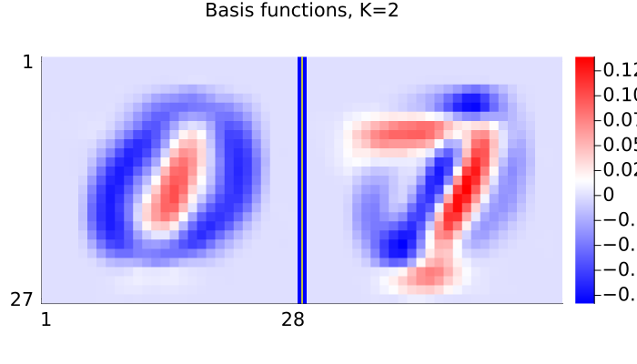
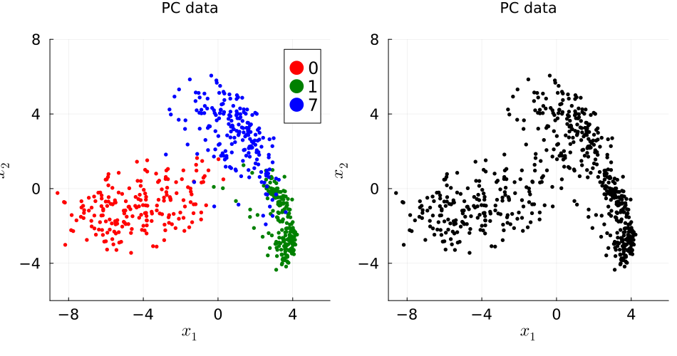
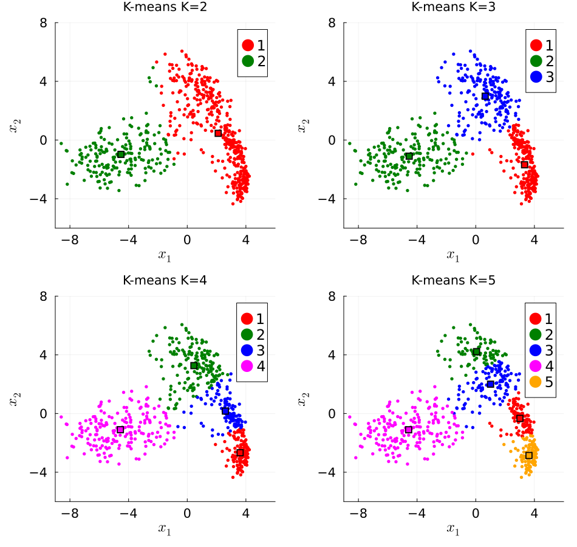
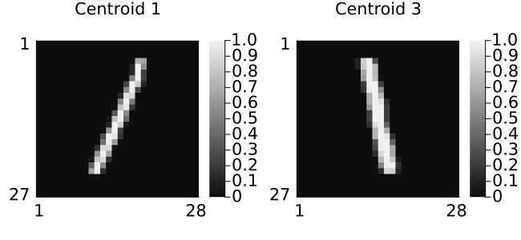
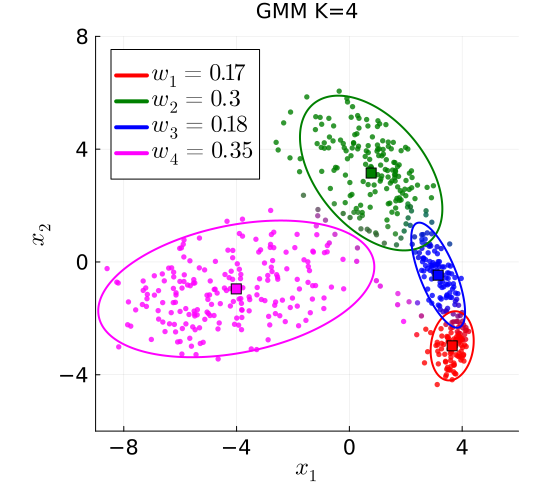

Clustering demo
Illustrate k-means clustering and Gaussian mixture model (GMM) clustering with MNIST hand-written digit images in Julia.
This page comes from a single Julia file: cluster1.jl.
You can access the source code for such Julia documentation using the 'Edit on GitHub' link in the top right. You can view the corresponding notebook in nbviewer here: cluster1.ipynb, or open it in binder here: cluster1.ipynb.
Setup
Add the Julia packages used in this demo. Change false to true in the following code block if you are using any of the following packages for the first time.
if false
import Pkg
Pkg.add([
"Clustering"
"InteractiveUtils"
"LaTeXStrings"
"LinearAlgebra"
"MIRTjim"
"MLDatasets"
"Plots"
"Statistics"
])
endTell Julia to use the following packages. Run Pkg.add() in the preceding code block first, if needed.
using Clustering: kmeans
using InteractiveUtils: versioninfo
using LaTeXStrings: @L_str, latexstring
using LinearAlgebra: svd, det, cholesky, Symmetric
using MIRTjim: jim, prompt
using MLDatasets: MNIST
using Plots: default, gui, savefig, RGB, cgrad, twinx, Colorant
using Plots: plot, plot!, scatter!, histogram!, contour!
using Random: randperm, seed!
using Statistics: mean
default(); default(markersize=3, markerstrokecolor=:auto, label="",
tickfontsize=14, labelfontsize=16, legendfontsize=16, titlefontsize=14)The following line is helpful when running this file as a script; this way it will prompt user to hit a key after each figure is displayed.
isinteractive() ? jim(:prompt, true) : prompt(:draw);Load data
Read the MNIST data for some handwritten digits. This code will automatically download the data from web if needed and put it in a folder like: ~/.julia/datadeps/MNIST/.
if !@isdefined(data) || true
if !@isdefined(digitn)
digitn = [0, 1, 7]
end
digit_str = join(digitn); # string for file names
isinteractive() || (ENV["DATADEPS_ALWAYS_ACCEPT"] = true) # avoid prompt
dataset = MNIST(Float32, :train)
nrep = 1000 # how many of each digit
# function to extract the 1st `nrep` examples of digit n:
data = n -> dataset.features[:,:,findall(==(n), dataset.targets)[1:nrep]]
data = cat(dims=4, data.(digitn)...)
labels = vcat([fill(d, nrep) for d in digitn]...) # to check later
nx, ny, nrep, ndigit = size(data)
data = data[:,2:ny,:,:] # make images non-square to force debug
ny = size(data,2)
size(data) # (nx, ny, nrep, ndigit)
end(28, 27, 1000, 3)Look at some of the image data
pd = jim(data[:,:,1:10,:], "Data, d=$(nx*ny), N=$(nrep*ndigit)";
colorbar = nothing, size = (600,200), tickfontsize = 6, ncol = 10)
# savefig(pd, "km$digit_str-digit.pdf")
Partition data into train / validate / test
ntrain = 200
nvalid = 100
ntest1 = 600
seed!(0)
tmp = randperm(nrep)
itrain = (1:ntrain)
ivalid = (1:nvalid) .+ ntrain
itest1 = (1:ntest1) .+ (ntrain + nvalid)
dtrain = data[:,:,tmp[itrain],:]
dvalid = data[:,:,tmp[ivalid],:]
dtest1 = data[:,:,tmp[itest1],:];Sample mean of all training images:
dmean = sum(dtrain, dims = 3:4) / ntrain / ndigit
pm = jim(dmean; title="Mean image")
# savefig(pm, "km$digit_str-mean.pdf")
PCA-based dimensionality reduction
Use two components for easy visualization
Xdemean = reshape(dtrain .- dmean, nx*ny, :) # unfold
if !@isdefined(K)
K = 2
end
U = svd(Xdemean).U[:,1:K];Show basis vectors
tmp = reshape(U, nx, ny, K)
pu = jim(tmp; nrow=1, title="Basis functions, K=$K", color = :bwr,
size = (700, K==2 ? 400 : 150), colorbar_ticks = [0])
# savefig(pu, "km$digit_str-basis-$K.pdf")
Visualize embedded data
embed(data, n) = reshape(U' * reshape(data .- dmean, nx*ny, :), K, n, :)
Xtrain = embed(dtrain, ntrain) # (K, ntrain, ndigit)
Xvalid = embed(dvalid, nvalid)
Xtest1 = embed(dtest1, ntest1)
labeler(n) = vcat([fill(digitn[id], n) for id in 1:ndigit]...)
ytrain = labeler(ntrain)
yvalid = labeler(nvalid)
ytest1 = labeler(ntest1)
xlim = (-9,6)
ylim = (-6,8)
args = (;
xaxis = (L"x_1", xlim, -8:4:8),
yaxis = (L"x_2", ylim, -8:4:8),
aspect_ratio = 1,
size = (550, 500),
)
petr = plot(; title = "PC data", args...)
colors = (:red, :green, :blue, :magenta, :orange)
for id in 1:ndigit
scatter!(petr, Xtrain[1,:,id], Xtrain[2,:,id];
label = "$(digitn[id])", color = colors[id])
end
X = reshape(Xtrain, K, ndigit * ntrain)
petb = plot(; title = "PC data", args...)
scatter!(petb, X[1,:], X[2,:]; color = :black)
pp = plot(petr, petb; size = (950, 500))
prompt()
# savefig(pp, "km$digit_str-embed.pdf")
function plot_cluster(ncluster::Int; seed::Int = 3)
seed!(seed)
out = kmeans(X, ncluster)
p = plot(; title = "K-means K=$ncluster", args...)
for k in 1:ncluster
isk = out.assignments .== k
scatter!(p, X[1,isk], X[2,isk];
label = "$k", color = colors[k])
ck = out.centers[:,k]
scatter!(p, [ck[1]], [ck[2]]; markerstrokecolor = :black,
marker = :square, color = colors[k], markersize = 5,)
end
return p
end
p2 = plot_cluster(2)
p3 = plot_cluster(3)
p4 = plot_cluster(4)
p5 = plot_cluster(5)
pk = plot(p2, p3, p4, p5;
size = (950, 900),
)
# savefig(pk, "km$digit_str-kmeans.pdf")
Examine some cluster centers
seed!(3)
out4 = kmeans(X, 4)
i1 = argmin(vec(sum(abs2, out4.centers[:,1] .- X, dims=1)))
i3 = argmin(vec(sum(abs2, out4.centers[:,3] .- X, dims=1)))
i4 = argmin(vec(sum(abs2, out4.centers[:,4] .- X, dims=1)))
p4c = jim(reshape(dtrain, nx, ny, ndigit*ntrain)[:,:,i4])
p13 = plot(
jim(reshape(dtrain, nx, ny, ndigit*ntrain)[:,:,i1];
title = "Centroid 1"),
jim(reshape(dtrain, nx, ny, ndigit*ntrain)[:,:,i3];
title = "Centroid 3"),
size = (650, 300),
)
# savefig(p13, "km$digit_str-center13.pdf")
GMM clustering
Fit a GMM to the same 2D (PCA embedded) training data X using the EM algorithm, as in the GMM demo, initialized using k-means.
Adjust nclust_gmm to change the number of GMM clusters.
nclust_gmm = 4 # number of GMM clusters (components)4Multivariate Gaussian pdf evaluated at each column of X:
function gauss_pdf(X::AbstractMatrix, μ::AbstractVector, Σ::AbstractMatrix)
d = size(X, 1)
L = cholesky(Symmetric(Σ)).L
R = L \ (X .- μ) # whitened residuals
return vec(exp.(-sum(abs2, R; dims=1) / 2)) / sqrt((2π)^d * det(Σ))
end;EM for GMM, initialized by k-means:
function em_gmm(X::AbstractMatrix, nc::Int; niter::Int = 500, tol = 1e-6)
d, N = size(X)
out = kmeans(X, nc)
μ = [out.centers[:,k] for k in 1:nc]
w = [count(==(k), out.assignments) / N for k in 1:nc]
Σ = map(1:nc) do k
Z = X[:, out.assignments .== k] .- μ[k]
Z * Z' / size(Z, 2)
end
γ = zeros(nc, N)
loglik = Float64[]
for iter in 1:niter
# E-step
for k in 1:nc
γ[k,:] = w[k] * gauss_pdf(X, μ[k], Σ[k])
end
push!(loglik, sum(log, sum(γ; dims=1)))
γ ./= sum(γ; dims=1)
(iter > 1 && loglik[end] - loglik[end-1] < tol * abs(loglik[end])) &&
break
# M-step
for k in 1:nc
Nk = sum(γ[k,:])
w[k] = Nk / N
μ[k] = X * γ[k,:] / Nk
Z = X .- μ[k]
Σ[k] = (Z .* γ[k,:]') * Z' / Nk
end
end
return (; w, μ, Σ, γ, loglik)
end;Ellipse containing probability mass β for a bivariate Gaussian:
function ellipse(μ, Σ; β = 0.9, nt = 201)
r = sqrt(-2 * log(1 - β))
t = range(0, 2π, nt)
A = cholesky(Symmetric(Σ)).L
return μ .+ r * A * [cos.(t)'; sin.(t)'] # (2, nt)
end;Run EM:
seed!(3)
gmm = em_gmm(Float64.(X), nclust_gmm)
length(gmm.loglik) # number of EM iterations24Plot the fitted GMM. Each data point's color is the responsibility-weighted average of the cluster colors, so ambiguous points have blended colors.
function plot_gmm(X, gmm; β = 0.9)
nc = length(gmm.w)
crgb = [RGB{Float64}(parse(Colorant, string(colors[k]))) for k in 1:nc]
# quantize colors: GR has a limited color table
color = map(eachcol(gmm.γ)) do γn
c = sum(γn .* crgb)
RGB(round(c.r; digits=1), round(c.g; digits=1), round(c.b; digits=1))
end
p = plot(; title = "GMM K=$nc", args..., legend = :topleft)
scatter!(p, X[1,:], X[2,:]; color, alpha = 0.8)
for k in 1:nc
z = ellipse(gmm.μ[k], gmm.Σ[k]; β)
wk = round(gmm.w[k]; digits = 2)
plot!(p, z[1,:], z[2,:]; color = colors[k], linewidth = 2,
label = latexstring("w_$k = $wk"))
scatter!(p, [gmm.μ[k][1]], [gmm.μ[k][2]]; color = colors[k],
marker = :square, markersize = 5, markerstrokecolor = :black)
end
return p
end;
pg = plot_gmm(X, gmm)
# savefig(pg, "km$digit_str-gmm-$nclust_gmm.pdf")
prompt()This page was generated using Literate.jl.